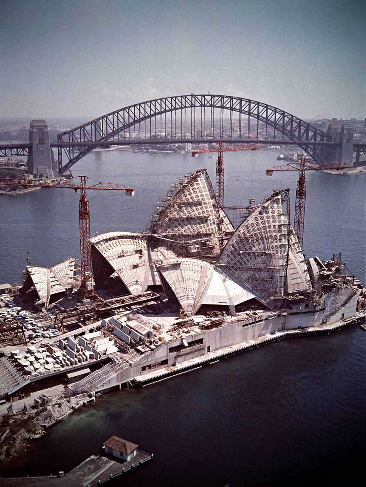
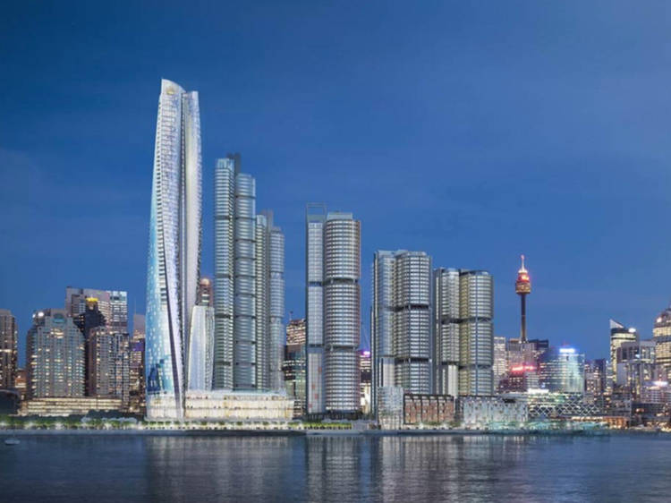
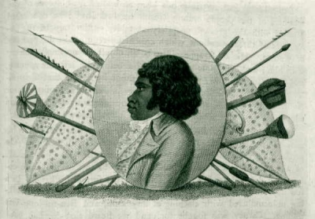

Step back in time and explore the timeless marvels that shaped Sydney long before it became a bustling
metropolis. This exhibit delves into the region’s ancient geological formations, such as the iconic
sandstone cliffs and caves carved over millions of years...
Step back in time and explore the timeless marvels that shaped Sydney long before it became a bustling
metropolis. This exhibit delves into the region’s ancient geological formations, such as the iconic
sandstone cliffs and caves carved over millions of years, alongside fossils of prehistoric creatures
that once roamed the area. Visitors can also discover remnants of early Aboriginal life, including
sacred rock carvings, ceremonial sites, and hand stencils that provide a glimpse into the traditions of
Sydney’s first peoples. These wonders tell a story of resilience, connection, and deep respect for the
land.
Through interactive features, such as virtual cave tours and fossil handling stations, Ancient
Wonders of Sydney offers a hands-on exploration of the city’s natural and cultural legacy.
Visitors can immerse themselves in the artistry of Aboriginal rock carvings and learn about the ancient
megafauna that once thrived in the region. This exhibit reveals the profound beauty and history embedded
in Sydney’s landscapes, inspiring a deeper appreciation for its ancient origins.
Upcoming exhibit
Futures of the Past: Visions of Tomorrow from Yesterday


This exhibit delves into how past generations envisioned the future, showcasing their innovative
designs, technological prototypes, and cultural predictions. Visitors will explore unrealized plans
for Sydney’s skyline, such as alternative designs for the Harbour Bridge and Opera House, alongside
vintage advertisements and media...
This exhibit delves into how past generations envisioned the future, showcasing their innovative
designs, technological prototypes, and cultural predictions. Visitors will explore unrealized plans
for Sydney’s skyline, such as alternative designs for the Harbour Bridge and Opera House, alongside
vintage advertisements and media that imagined futuristic lifestyles, from flying cars to robot
servants. Through these artifacts, Futures of the Past highlights the creativity and optimism that
shaped Sydney’s development and influenced its present-day identity.
Interactive features, such as augmented reality experiences and hands-on model-building stations,
allow visitors to engage with these visionary ideas in dynamic ways. By examining yesterday’s dreams
of tomorrow, the exhibit invites reflection on how imagination and ambition have continuously shaped
Sydney’s evolution—and challenges us to think about the futures we’re designing today.
Past exhibit
Legends Reimagined: Sydney’s Stories Brought to Life

This exhibit brings Sydney’s iconic myths, tales, and historical figures to life through modern
artistic and technological interpretations. From Indigenous Dreamtime stories like the creation of
the Three Sisters to colonial-era...
This exhibit brings Sydney’s iconic myths, tales, and historical figures to life through modern
artistic and technological interpretations. From Indigenous Dreamtime stories like the creation of
the Three Sisters to colonial-era figures such as Bennelong, visitors can explore how these legends
have evolved and continue to shape Sydney’s identity. The exhibit also delves into urban myths,
haunted sites, and lesser-known cultural tales, offering fresh perspectives on the city’s diverse
heritage.
Interactive features, including holographic storytelling and a digital legend creator, allow
visitors to engage directly with Sydney’s past while imagining its future stories. By reinterpreting
these timeless narratives, Legends Reimagined celebrates the enduring power of storytelling in
connecting communities and preserving culture for generations to come.